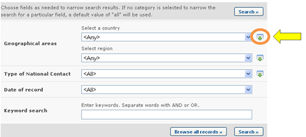
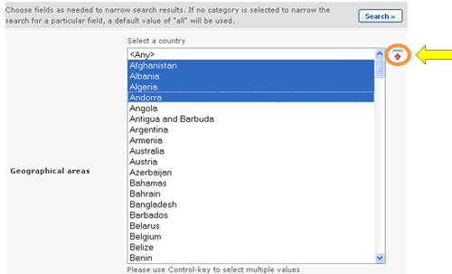
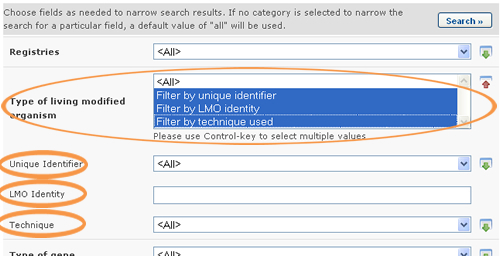

Many fields allow the user to select an option from a dropdown box, e.g. selection lists and additional criteria fields. These fields are often followed by a small icon with a green arrow, which can be used to select more than one option from the dropdown box.

Clicking on that icon displays the selectable options in a list. To select multiple options, hold down the Control (Ctrl) key if you are using a PC system or the Apple key if you are using a Macintosh system, while you click on the several options that you wish to select.
The icon now shows a red arrow pointing up, and clicking on it again will close the list, preserving your selected options.

When more than one option is selected from a selection list field, records corresponding to any of the selected options are included in the results. For example, when searching for National Contacts, if two countries are selected in the Country field, National Contacts from both countries will be displayed in the search results, i.e., records corresponding to the first and to the second selected countries.
Conversely, when more than one option is selected from an additional search criteria field, several new fields will be displayed in the search criteria area for the user to fill. For example, when searching for Country’s Decisions and Other Communications, new search criteria can be added by selecting multiple options in the Type of Living Organism field. For example, if the “Filter by Unique Identifier”, “Filter by Gene name” and “Filter by technique used” options are selected, then three new fields will appear accordingly in the screen for the user to input search criteria in them.
